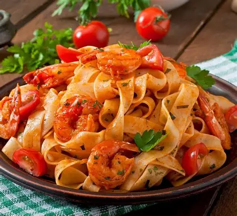
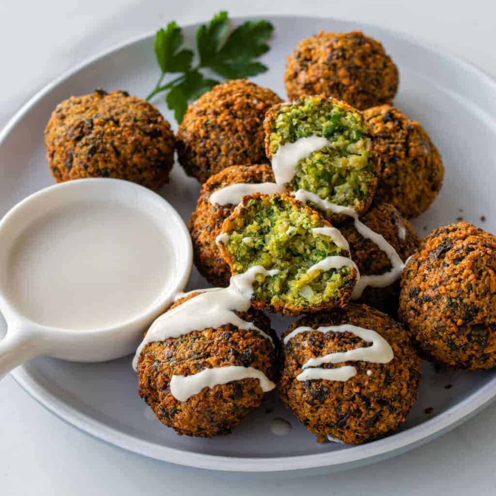
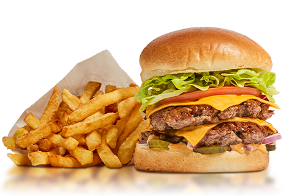
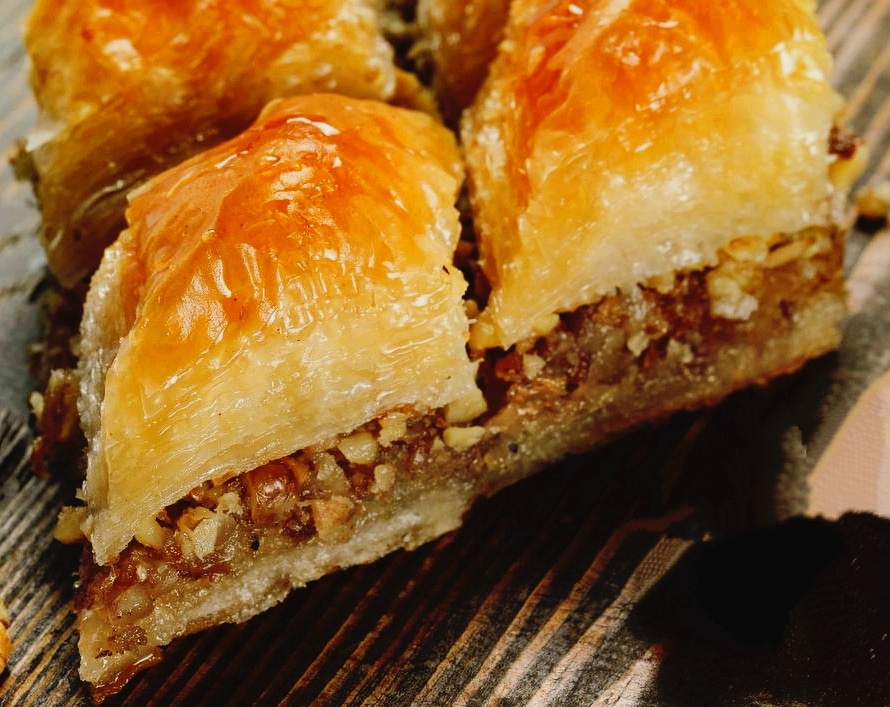

International Cuisine Recipes

Indian Cuisine
Click to expand — popular Indian dishes
Butter Chicken
Paneer Tikka
Biryani

Pakistani Cuisine
Hearty, spice-forward favorites
Nihari
Seekh Kebabs
Haleem

Italian Cuisine
Comforting pasta, pizza and more
Spaghetti Pomodoro
Margherita Pizza
Risotto alla Milanese

Mexican Cuisine
Vibrant, fresh and bold
Tacos al Pastor
Chicken Enchiladas
Guacamole

Japanese Cuisine
Delicate flavors and precision
Classic Sushi Rolls
Tonkotsu Ramen
Tempura

Chinese Cuisine
Wok-heated and family-friendly
Fried Rice
Kung Pao Chicken
Spring Rolls

Thai Cuisine
Bright, spicy and aromatic
Pad Thai
Green Curry
Tom Yum Soup

Middle Eastern Cuisine
Hearty grains, spice blends and mezze
Hummus
Shawarma
Tabbouleh

American Cuisine
Comfort classics and regional favorites
BBQ Ribs
Mac and Cheese
Classic Burger
French Cuisine
Refined techniques and rich flavors
Coq au Vin
Ratatouille
Crème Brûlée

Turkish Cuisine
Comforting kebabs and mezze
Doner Kebab
Kofte
Baklava

Korean Cuisine
Bold, spicy and umami-rich
Bibimbap
Kimchi
Bulgogi

Greek Cuisine
Fresh, herby Mediterranean flavors
Moussaka
Greek Salad
Souvlaki